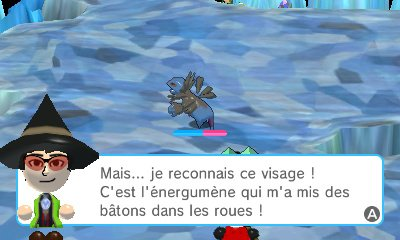
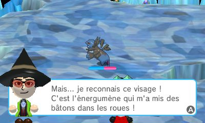

![[ANA JDG] Asterix and the Great Rescue - Megadrive](../vi/6oUXi0ckLmA/default.jpg)
![[ Présentation pour la chaîne Grenier des Joueurs ] JDG Prod](../art/SHAR.6419.583.2.jpg)


1.Le schéma de Lasswell (1930-1940)
Ce schéma est simple, le voici:
![[La publicité]Les différentes approches](../5252/79895252/pics/3278231816_1_4_k9NITQG8.jpg)
source: http://fr.slideshare.net/dcornelis_slide/chapitre1-theories-de-la-communication3epartie
Là, c'est le ciblage du public et l'analyse des effets de ce ciblage qui est surtout mit en avant par Lasswell. Voyons ça comme un schéma d'étude d'un marché en fonction de 5 variables interdépendantes.
2.Le modèle AIDA
Encore une illustration assez intéressent:
![[La publicité]Les différentes approches](../5252/79895252/pics/3278231816_1_6_1mKpAql2.png) source: http://www.institut-numerique.org/partie-i-revue-de-litterature-513ee17742186
source: http://www.institut-numerique.org/partie-i-revue-de-litterature-513ee17742186Ce modèle est la représentation parfaite du procédé de la publicité que nous subissons à chaque fois que nous allumons la TV, la radio ou encore un site de streaming.
C'est LA DÉMARCHE MARKETING!!!!
Maintenant, des spécialistes ont trouvé une faille dans le modèle AIDA car le modèle ne fonctionne pas lorsqu'il s'agit d'un achat “coup de c½ur”. Malgré cette faille, ce modèle reste toujours d'actualité et est toujours utilisé de nos jours, car celui-ci est considéré comme une “formule magique”.
Maintenant, il peut y avoir une cinquième étape à cette formule magique (rien n'est vraiment parfait) car malgré que ce modèle soit toujours utilisé, on remarqua qu'il manquait une dernière étape pour boucler ce modèle. Celle-ci est apparue suite à l'évolution du mode de consommation des individus. Ce changement est dû entre autre aux médias, et aux technologies qui ont évolué, ainsi que des besoins de la population. Voilà pourquoi ce modèle devint incomplet aux yeux des marqueteurs. Cette fameuse cinquième étape est la "satisfaction". Son but est assez important, car elle permet de fidéliser le client pour vendre d'autres produits et services et surtout de le transformer en client assuré.
3.Le neuromarketing
C'est une technique qui met en lien direct les neurosciences au marketing, à la communication, et à la pub. Cet outil est très intéressant à analyser, du point de vue du comportement du consommateur en présence de marques via les réponses émises par le cerveau.
3 moyens sont utilisés:
1)L'IRM: considérée comme la technique la plus précise du neuromarketing, elle permet d'avoir une vision complète du cerveau.
Utilisée dans les films pour savoir à quelle scène du film le témoin est le plus sensible afin de calibrer au mieux le packshot (= “une photographie de haute qualité d'un produit sur un fond le plus souvent uni servant à présenter le produit sur catalogue, sur un site web ou encore dans une démarche de contrôle qualité au sein d'une entreprise”)
2)EFG: qui est l'Electro-Encéphalogramme permettant de mesurer à l'aide de champs électriques chaque milliseconde sur la surface du cerveau via un casque muni d'électrodes.
3)Eye tracking: méthode permettant de se mettre à la place des yeux du consommateur, afin d'essayer de voir dans un supermarché par exemple quels seraient les emplacements, les couleurs qui attireraient plus spécifiquement l'½il du consommateur. Bien sur, ça se fait en simulation, pas dans de vrais magasins!
N'oubliez pas que le but de l'entreprise afin d'être la plus rentable possible, c'est d'essayer d'avoir une communication de plus en plus efficace pour une marque et une pub. C'est pour ça que Coca-Cola ou Facebook s'affichent toujours de plus en plus et
(pour Facebook ou encore YouTube et Dailymotion) optimiser leurs pages webs selon les intérêts de CHACUN des internautes (avec le système des cookies) afin de lui afficher des PUBs qui ont le meilleur potentiel à le faire consommer.
N'oubliez pas qu'un "cookie" est "un petit fichier texte au format alphanumérique déposé sur le disque dur de l'internaute par le serveur du site visité ou par un serveur tiers."
source:http://www.definitions-marketing.com/definition/cookie/
Maintenant, dans le neuromarketing aussi, il y a une faille car même si des sondages sont réalisés afin d'évaluer si tel ou tel produit marcherait, les résultats seront de toute manière erronés car l'irrationalité de nos actions ne peut être mesurée. Malgré tout, les industries continueront de développer le neuromarketing, pour tenter de comprendre la dimension irrationnelle du cerveau, dans le but de consolider la valeur que le cerveau a de la marque.

![[Compte rendu d’un essai]François Heinderyckx « la malinformation, Plaidoyer pour une refondation de l’information »](../5252/79895252/pics/3272353262_1_2_P6Mdn9Rh.png)
![[Compte rendu d’un essai]François Heinderyckx « la malinformation, Plaidoyer pour une refondation de l’information »](../5252/79895252/pics/3272353262_1_4_Wr1zKOaE.png)
![[La p'tite discute]Kidpaddleetcie à Le Masque!](../5252/79895252/pics/3266081672_1_3_neZn4kzA.png)


![[Fan-Art]Pokémon_Master Guitare!](../5252/79895252/pics/3262038360_1_3_QHYSwWU3.gif)
![[Fan-Art]Pokémon_Master Guitare!](../5252/79895252/pics/3262038360_1_9_gPubcIij.gif)

![[Jeux-Vidéos]Pokémon Rumble World](../5252/79895252/pics/3250201136_1_3_7NDJqn9B.jpg)
![[Jeux-Vidéos]Pokémon Rumble World](../5252/79895252/pics/3250201136_1_5_WBBCg8vi.jpg)
![[Jeux-Vidéos]Pokémon Rumble World](../5252/79895252/pics/3250201136_1_7_j8QnvhNk.jpg)
![[Jeux-Vidéos]Pokémon Rumble World](../5252/79895252/pics/3250201136_1_9_zHHsOjUN.jpg)
![[Jeux-Vidéos]Pokémon Rumble World](../5252/79895252/pics/3250201136_1_11_kVeJveb3.jpg)
![[Jeux-Vidéos]Pokémon Rumble World](../5252/79895252/pics/3250201136_1_13_DU9MXEbl.jpg) 
![[Jeux-Vidéos]Pokémon Rumble World](../5252/79895252/pics/3250201136_1_17_2PpEq9A1.jpg)


![[Le Cycle de Nintendo]Présentation et Traduction](../5252/79895252/pics/3230191713_1_4_9Y6qwmfY.png)
![[Présentation de Programme]Format Factory](../5252/79895252/pics/3228677613_1_16_UlxLG5Fl.jpg)
![[Présentation de Programme]Format Factory](../5252/79895252/pics/3228677613_1_18_CGBT6Fdt.jpg)
![[Présentation de Programme]Format Factory](../5252/79895252/pics/3228677613_1_20_ZJAzrPjU.jpg)
![[Présentation de Programme]Format Factory](../5252/79895252/pics/3228677613_1_22_iWXr1Wnl.jpg)
![[Présentation de Programme]Format Factory](../5252/79895252/pics/3228677613_1_24_o330oP2a.jpg)
![[Présentation de Programme]Format Factory](../5252/79895252/pics/3228677613_1_26_EAKYHVFm.jpg)
![[Présentation de Programme]Format Factory](../5252/79895252/pics/3228677613_1_28_3JsQTrIi.jpg)


![[Arche de Glin]Le pigeonneau!!!](../5252/79895252/pics/3227447443_1_2_vimJ8RHw.jpg)


![[Creepy-Pasta]La théorie du coma de Sacha!](../5252/79895252/pics/3223761183_1_3_iVsj0CmP.png)
![[Creepy-Pasta]La théorie du coma de Sacha!](../5252/79895252/pics/3223761183_1_5_WSF4hcVm.png)
![[Creepy-Pasta]La théorie du coma de Sacha!](../5252/79895252/pics/3223761183_1_7_LN0qnavo.jpg)


![[Projet de site]Facefriends](../5252/79895252/pics/3214540107_1_2_1M4O6nMM.jpg)
![[Projet de site]Facefriends](../5252/79895252/pics/3214540107_1_8_4dB8EOFw.jpg)
![[Projet de site]Facefriends](../5252/79895252/pics/3214540107_1_10_vb3DEvun.png)
![[Projet de site]Facefriends](../5252/79895252/pics/3214540107_1_12_zzX6QEG6.png)
Partage